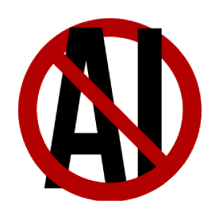

adam ivan hanas-alves
★ welcome ★ to my website!
below you'll find the journal, dates following the wonderful ISO 8601 for your pleasure, dearest surfer
the journal (assuming i reach my 18th birthday lmao):
- my 18th birthday
did you really think i'd use ai on this site?
